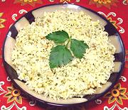

|
Rice with Saffron & Pine NutsSpain - El Levante - Arroz al Azafran con Pinones | ||||
| Serves: Effort: Sched: DoAhead: |
5 side ** 45 min Yes |
A simple all-purpose rice dish with sufficient flavor to be interesting in itself, but it will not overwhelm flavors of what it is served with. Best freshly made, but can be reheated in the oven. | |||
|
|
1 1 2 1-1/2 2 2 1 1 few 1/4 |
c oz T t T T c c t |
Rice, short (1) Onion Parsley Thyme leaves (2) Butter Pine Nuts Stock (3) Water Saffron Threads Salt |
Prep - (10 min)
|